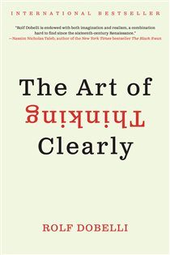

Library › Psychology & People
The Art of Thinking Clearly — Summary & Key Lessons

99 thinking errors sabotaging your decisions — the field guide to every trap your brain sets for you.
📖 OPEN THE FULL INTERACTIVE BREAKDOWN →🌐 Read it in Hindi, Hinglish, Gujarati, Tamil & 22 more languages — free, with audio.
💡 The Big Idea
Dobelli's premise is liberating: you don't need to be more brilliant to decide better — you need to be less stupid in predictable ways. The book catalogs 99 systematic thinking errors, each a mental shortcut that served our ancestors on the savannah and now quietly empties our wallets and wrecks our plans: survivorship bias (we see the winners, never the graveyard), sunk cost (throwing good money after bad because we've 'come so far'), social proof (50 million Elvis fans CAN be wrong), confirmation bias (the mother of all errors — hunting only for evidence that agrees with us), story bias (preferring a satisfying narrative to a true one), and dozens more. The errors are stubborn — knowing about them doesn't uninstall them — but they're PREDICTABLE, which means you can build checklists, rules, and habits that catch your brain in the act at the moments that matter: big money, big career, big relationships. Think clearly where it counts; let intuition drive where mistakes are cheap.
🧠 The 4 Key Lessons
Lesson 1: Sunk Cost: The 'Invested Too Much to Quit' Trap
Error 5: Why You Should Forget the Past
Every rupee, hour, and heartbeat you've already spent is GONE — unrecoverable regardless of what you do next. Rationally, only future costs and future benefits should drive decisions. But humans are consistency addicts: abandoning a project 'wastes' the investment and admits the original call was wrong, so we pour more in — watching terrible movies to the end, holding crashing stocks 'until they recover to what I paid' (the market doesn't know your entry price and doesn't care), staying years extra in dead relationships and doomed projects BECAUSE of the years already lost. The more you've invested, the stronger the pull — which means sunk cost bites hardest exactly when the stakes are highest. The escape question is always the same: 'Knowing what I know now, would I START this today?' If no, the past is not a reason to continue — it's just the receipt for a lesson.
📖 Example: Concorde — the error's official mascot ('the Concorde fallacy'). Britain and France knew YEARS before launch that the supersonic jet would never be commercially viable; every internal analysis said stop. But billions were already in, national prestige was… Read the full example →
⚡ Do this: Pick your longest-running commitment (project, investment, subscription, even a relationship pattern) and ask: 'Would I start this TODAY, knowing what I know?' If no — schedule the exit this week, and forgive the past you: the money was already gone.
Lesson 2: Social Proof: When Everyone's Doing It, Check Your Wallet
Error 4: If 50 Million People Say Something Foolish
Social proof is the instinct to feel correct when acting like the crowd — evolution's shortcut from when following the herd away from a lion beat independent analysis. Today it powers laugh tracks (jokes rated funnier with fake laughter), queues outside restaurants (we infer quality from the line, so the line grows itself), bank runs, bestseller lists (books sell because they've sold), and every market bubble in history — the more people believe, the more people believe. The bite: social proof is STRONGEST exactly when you're most uncertain, which is exactly when you're making your biggest decisions (career moves, investments, houses) — so the crowd steers you precisely where your own judgment is weakest. And crowds don't just err; they err ENORMOUSLY, because everyone's checking everyone else and nobody's checking reality.
📖 Example: Solomon Asch's classic experiment: show people lines of obviously different lengths and ask which two match — alone, error rate near zero. Add seven actors who confidently give the same WRONG answer first, and 75% of subjects went along with the obviously… Read the full example →
⚡ Do this: For your next significant decision, write your conclusion BEFORE checking what others chose. Then ask one question of every popular option: 'If nobody else were doing this, would the evidence alone convince me?' If not, you've found borrowed conviction — return it.
Lesson 3: Confirmation Bias: The Mother of All Misconceptions
Errors 7-8: Beware the 'Special Case'
Confirmation bias is the master error that feeds all others: we treat new information like a border guard treats travelers — evidence agreeing with our beliefs glides through; evidence disagreeing gets detained, discredited, or deported as a 'special case.' The result: two smart people can watch identical facts and each leave MORE convinced of opposite views. It compounds silently — Google shows you what you clicked before, your feed learns your bias, your friends share it — until your worldview is a mirror-lined room that feels like a window. Darwin's counter-practice is the gold standard: he kept a notebook specifically for observations that CONTRADICTED his theory, writing them down within 30 minutes — because he'd noticed his brain conveniently 'forgot' disconfirming evidence faster than confirming evidence. The strength of your thinking isn't measured by the evidence you've collected FOR your beliefs; it's measured by how hard you've genuinely hunted for evidence against them.
📖 Example: Dobelli's investor case: a trader convinced a stock is a winner reads twenty articles — and 'somehow' the five bullish ones feel rigorous while the fifteen bearish ones are 'clickbait,' 'don't understand the story,' or 'short-seller manipulation.' The stock… Read the full example →
⚡ Do this: Take your strongest current belief (about your business, an investment, a person) and spend 30 minutes genuinely trying to kill it: search for the strongest opposing case, steelman it in writing. If you can't state the other side well enough that its holders would nod — you don't hold a view; a view holds you.
Lesson 4: Story Bias: Beware of Neat Narratives
Error 13: Even True Stories Are Fairytales
Brains are story machines: give us random events and we'll weave cause, meaning, and a moral by lunch. Stories compress and distort — they delete everything that doesn't fit the arc, invent causation between things that merely happened in sequence, and feel MORE true the MORE entertaining they are (exactly backwards). This is why media explains every market move with a tidy reason by closing bell ('stocks fell on profit-taking'), why company histories sound inevitable in the retelling ('we always knew'), and why your own autobiography feels like destiny instead of the coin-flips it mostly was. The danger isn't enjoying stories — it's making decisions on them: the neater the narrative, the more suspicious you should be, because reality is never neat. Dobelli's advice: when you hear a compelling story, ask who benefits from you believing it, and what the boring, statistical, un-narratable version of events would say.
📖 Example: The same crash, two products: after any market plunge, journalists MUST produce a cause by 6 PM — 'fears over interest rates,' 'geopolitical tensions' — chosen from the day's buffet of events. The honest answer ('millions of independent decisions produced… Read the full example →
⚡ Do this: Practice narrative detox: next time you hear a clean explanation for a complex event (market move, someone's success, your own failure), generate TWO alternative explanations including 'mostly luck/noise.' Decide only on what survives all three tellings.
✅ 5-Step Action Plan
- Run the sunk-cost test quarterly on every major commitment: 'Would I start this today?' — exit what fails.
- Form conclusions before consulting the crowd; adopt popular choices only when the evidence stands alone.
- Keep a Darwin list: actively record and revisit evidence that contradicts your current strategy.
- Distrust neat stories — demand the boring statistical version before deciding anything big.
- Build a personal error checklist of your top 5 recurring biases; review it before every major decision.
💬 Best Quotes from The Art of Thinking Clearly
- “We prefer a wrong map to no map at all.”
- “Whether we like it or not, we are puppets of our emotions.”
- “If 50 million people say something foolish, it is still foolish.”
Interactive version: mark lessons as read, listen in your language, share quote cards.